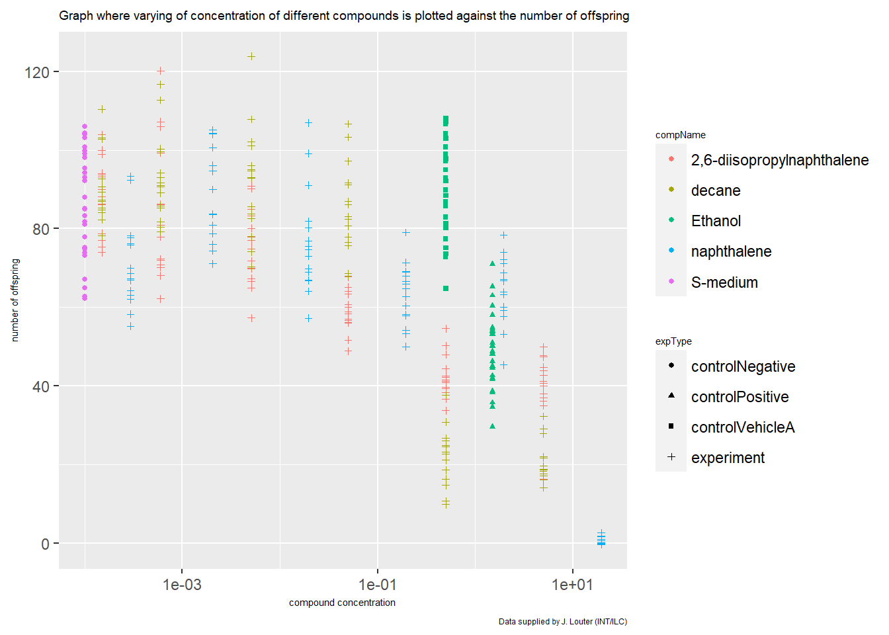
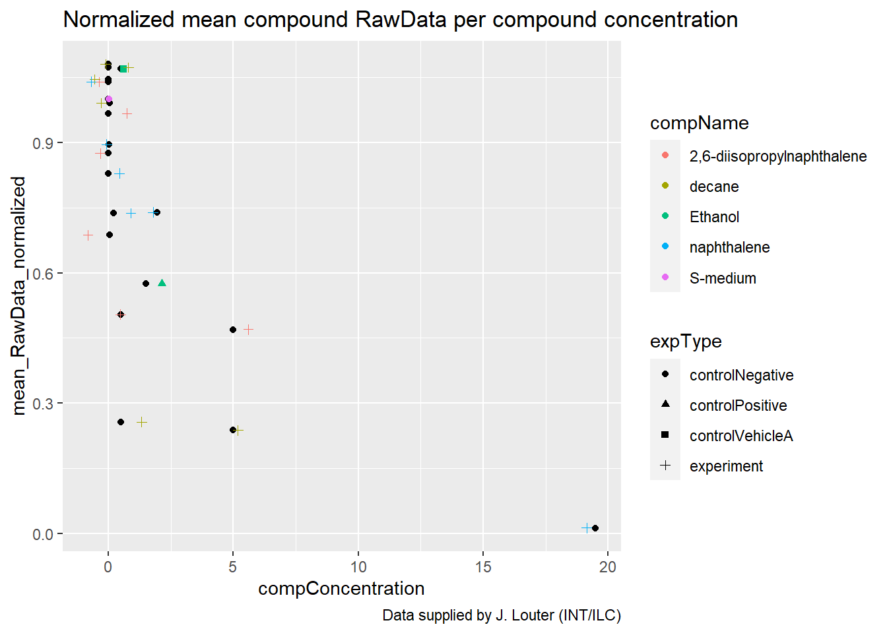

## -- Attaching packages --------------------------------------------------------------------------------------------------- tidyverse 1.3.1 --## v ggplot2 3.3.5 v purrr 0.3.4
## v tibble 3.1.6 v dplyr 1.0.8
## v tidyr 1.2.0 v stringr 1.4.0
## v readr 2.1.2 v forcats 0.5.1## -- Conflicts ------------------------------------------------------------------------------------------------------ tidyverse_conflicts() --
## x dplyr::filter() masks stats::filter()
## x dplyr::lag() masks stats::lag()And the data types of the variables RawData, compName and compConcentration:
#loading the excel file
exc1_1 <- read_excel("data_Raw/001_C.elegans_exp/CE.LIQ.FLOW.062_Tidydata.xlsx")
# Display the data type of select columns
exc1_1 %>% select(RawData, compName, compConcentration) %>% head(1)## # A tibble: 1 x 3
## RawData compName compConcentration
## <dbl> <chr> <chr>
## 1 44 2,6-diisopropylnaphthalene 4.99It would be expected that the data types of the columns are dbl, chr and dbl. compConcentration however, has the datatype chr. This means the format was imported incorrectly making it difficult to analyse the data.
after transforming the compConcentration data to double, the data was plotted in a scatterplot graph with the data for the different compounds on the y-axis (RawData) and the varying concentrations on the x-axis (compConcentration). Each variable got a colour matching the compName and a symbol matching the expType column-values. Jitter and log10 scaling of the X axis was added, for the “correct” graph
## Warning: Removed 5 rows containing missing values (geom_point).
Figure 1: Scatterplot displaying the amount of offspring at different concentrations per compound (colour) and experiment type (symbol)
The positive control for this experiments is ethanol. The negative control for this experiment is S-medium.
To analyze this experiment and learn whether there is an effect of different concentrations on offspring count and the effects of different compounds i would take these steps: -group data per compound -check if data is normally distributed -Use the appropriate statistical tests on the data to see if there is a significant difference in offspring count when using different concentrations of compounds -Calculate IC50 and create a plot of the curve
For the next visualization I have normalized the data for the controlNegative in such a way that the mean value for controlNegative is exactly equal to 1 and that all other values are expressed as a fraction thereof.
## `summarise()` has grouped output by 'expType', 'compName'. You can override using the `.groups` argument.| expType | compName | compConcentration | mean_RawData_normalized |
|---|---|---|---|
| controlNegative | S-medium | 0.00e+00 | 1.0000000 |
| controlPositive | Ethanol | 1.50e+00 | 0.5750873 |
| controlVehicleA | Ethanol | 5.00e-01 | 1.0690726 |
| experiment | 2,6-diisopropylnaphthalene | 4.99e-05 | 1.0391929 |
| experiment | 2,6-diisopropylnaphthalene | 4.99e-04 | 0.9670159 |

Figure 4: Scatterplot displaying the amount of offspring at different concentrations per compound (colour) and experiment type (symbol) normalized on the negative control.
this step was taken to get the result in relation to the “0” value, the amount of offspring from without any compound.